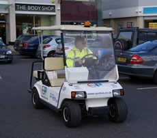
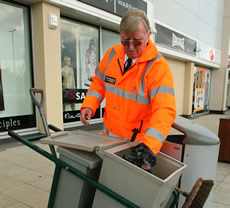

Smart & safe
Keeping up appearances isn’t easy.
For retail parks and shopping centres, juggling a multitude of different Facility Management (FM) suppliers can present a big headache.
Whether you are managing your own on-site car parks and FM provision from different suppliers, or a property management company subcontracting services, arranging cleaning and maintenance is a complex and time-consuming business.
Yet smart & safe common areas and walkways are very important ingredients of success. Today’s consumers expect a top class shopping environment. That means keeping up high standards throughout, not only in and around the outlets.
Beyond that, there are crucial health and safety issues. Not dealing with these matters quickly and correctly can have severe consequences for tenants and management.
We provide a fully integrated FM service. We employ teams of trained and experienced in-house personnel and, when required, we bring in the services of tried-and-tested expert subcontractors.
We ensure full quality control, employing our own cleaning and maintenance staff and, if necessary, supplying on-site management. We can supply staff as and when needed, either as dedicated personnel assigned to your site or as a mobile service visiting you to suit your requirements. Or a mixture of the two. The choice is yours.
CP Plus FM Services has the solution: a total, one-stop FM service.
Visit the CP Plus main website for information on our car park management solutions.